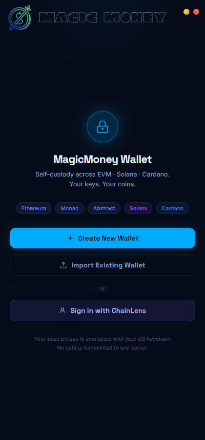
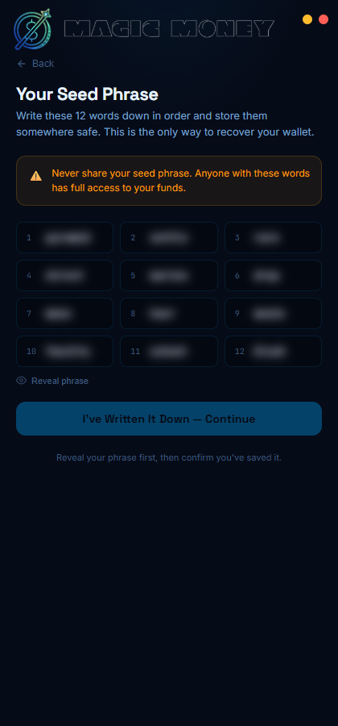
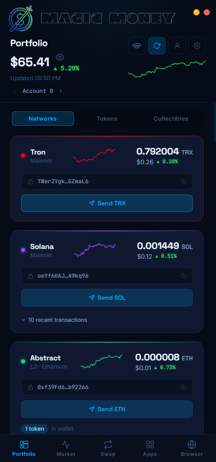
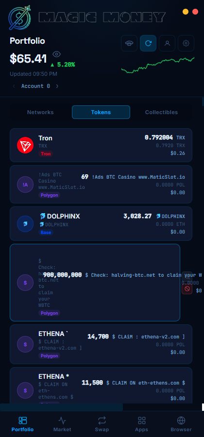
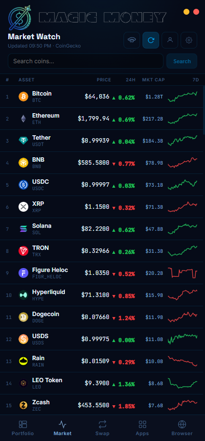
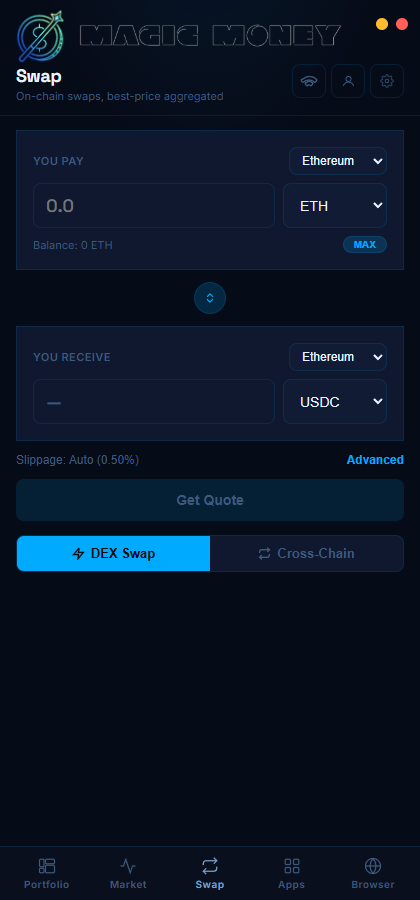
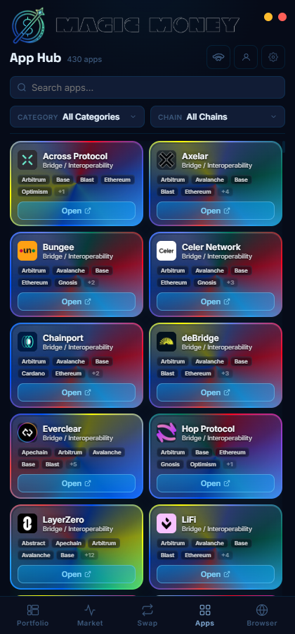
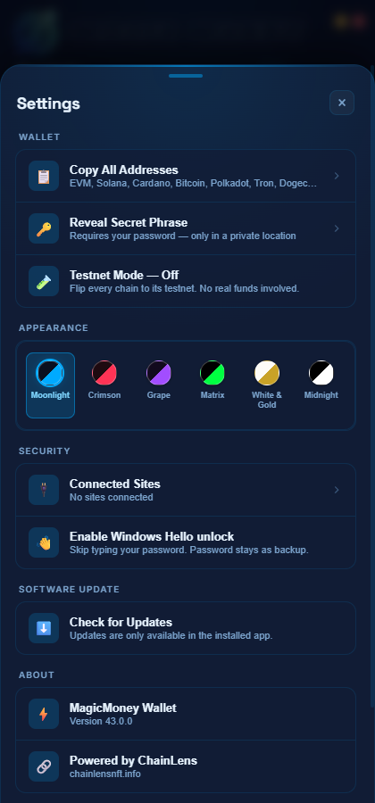

MagicMoney is in very good shape for a pre-1.0 wallet. The security architecture — the part of a wallet you cannot retrofit — is genuinely strong: keys never leave the Electron main process, every window is sandboxed with context isolation, secrets are double-wrapped (PBKDF2-600k → AES-256-GCM → OS keychain) with a KDF upgrade path, provider API keys live only as Cloudflare Worker secrets, the proxy host is pinned to a code-level allowlist, and Supabase writes require a fresh single-use EIP-191 ownership signature. Typecheck is clean, all 37 unit tests and all 3 Playwright e2e tests pass, and a full live walkthrough of the app produced zero JavaScript errors.
The gaps are at the product-hardening layer, not the foundation: no automatic scam-token filtering (phishing airdrops render prominently in the Tokens tab — confirmed on screen), silent dApp chain-switching without a user prompt, thin send-form validation (any string >10 chars is accepted as an address), a duplicated wallet API across the Electron and extension runtimes (~2,900 lines that must be kept in sync by hand), and minimal e2e coverage (3 tests, extension-only). Nothing found is critical; three issues are High.
Clean four-layer split with explicit trust boundaries:
| Layer | Role | Notes |
|---|---|---|
src/main/ (Electron main) | All key material, signing, chain RPC, caches, browser windows | The only place mnemonics exist decrypted; well-enforced |
src/preload/ | Context-isolated IPC bridges (wallet UI, dApp inject, approval, popup) | Sandbox + contextIsolation everywhere |
src/renderer/ | React 18 UI, no Node access, strict CSP in packaged builds | Receives only addresses/balances/booleans |
src/extension/ + cloudflare-worker/ | MV3 port of the same wallet; Worker = key-injecting proxy, KV cache, rate limiter, Supabase gateway | Worker is small (1,758 lines), readable, fail-open on cache, fail-closed on prod misconfig |
api-proxy.ts) with capability gates and graceful self-hoster fallback — a textbook seam.chain-config.ts) with testnet-mode selectors rather than forked code paths.ipc-handlers.ts (1,460 lines) and extension/background.ts (1,421 lines) implement the same wallet API twice against different stores. Comments already show mirror-fixes ("Mirrors the Electron handler"). This is the #1 structural risk — see Refactors.token-fetcher.ts (1,737 lines) mixes per-chain token fetching, NFT fetching, spam-adjacent logic, pricing, and caching in one file; DashboardPage.tsx (1,163 lines) mixes data orchestration, caching, filtering, and five sub-UIs.chain-config.ts and the EVM_CHAINS map in tx-sender.ts) — the BSC "quoted but couldn't send" regression (fixed as M-1 in code comments) came exactly from this split.Screenshots below are from a live scripted walkthrough of the built app (isolated profile, public test mnemonic). Overall: a distinctive, consistent dark identity; onboarding is genuinely good (masked seed with explicit reveal, strong warnings, password gate with no-recovery notice).








text-overflow: ellipsis + min-width: 0 on the name column. (L-9.)title only — add aria-label; audit focus-visible styles. Muted-on-dark contrast is mostly fine. (L-7.)npm run typecheck clean across both tsconfig projects; strict typing throughout; only ~40 any escapes in 25k lines, mostly at WalletConnect/chrome-API boundaries.balance-fetcher, token-fetcher, chain-config invariants, or the swap/senders chain-parity (the BSC regression class). (M-8.)style={{…}} objects in DashboardPage/SendModal/modals) alongside a real CSS token system — inconsistent, bloats render trees, invites theme drift. (L-5.)#22c55e App.tsx:273, #1FCE92, #ef4444) bypass the theme tokens the project's own convention mandates. (L-4.)file:// to keep dApp traffic off the main process; market data comes from a cron-refreshed Worker KV cache instead of per-user CoinGecko calls; GPU rasterization is force-enabled for canvas-heavy dApps.@solana/web3.js, WalletConnect, and blake2b are dynamically imported in background.ts but also statically imported by shared modules, so Rollup can't split them. (M-3.)secure-store.ts); renderer gets addresses/booleans only; every signing path goes through one accessor with a 15-min genuine-idle auto-lock.safeStorage; per-blob KDF params with automatic upgrade-on-unlock; legacy migration path; kdfIterations() rejects downgraded params.wallet.hello.enc), TPM-signature-derived on Windows, self-heals when the platform key is evicted, and never weakens the password path.sandbox: true, contextIsolation: true, nodeIntegration: false; strict response-header CSP for the packaged renderer; phishing guard on dApp navigation; popup allowlist; external URLs protocol-checked.config.json cannot redirect signing-adjacent traffic (H-3 fix in code).eth_sign gets a danger prompt; seed reveal is password-re-verified in both runtimes.wallet_switchEthereumChain / wallet_addEthereumChain (ipc-handlers.ts:887-920) change the active network with no user prompt. A malicious dApp can steer context before a tx request; the tx approval does name the chain (good mitigation), but users don't read chain names reliably. MetaMask prompts here for a reason.eth_sign is non-standard. It's implemented via signMessage (EIP-191 prefixed) — so dApps expecting raw-digest eth_sign receive signatures that won't verify. Since the prefixed behavior makes it redundant with personal_sign, reject eth_sign outright (industry norm) instead of returning a wrong-scheme signature.personal_sign/eth_signTypedData/eth_sendTransaction don't check the origin is approved first — any page in the dApp browser can pop a signing window. The user prompt still gates it, but requiring connection first reduces prompt-fatigue attacks.deriveAddresses collapses inner whitespace; the signing helpers (wallet-core.ts:232+) only trim().toLowerCase(). A phrase persisted with irregular internal spacing would derive different keys at signing time than at address time. Currently unreachable via the UI (import joins words with single spaces), but it's a landmine — normalize once, in one shared helper.config.json. Consider routing them through safeStorage too.userData (addresses, config, approved origins, floor/token caches) with exact in-memory cache invalidation. Appropriate for the data volume; no SQLite needed. Secrets are never in plain files.action + address + timestamp; the Worker recovers the signer with @noble/curves (no heavyweight web3 lib), enforces a ±10-minute freshness window, and burns each signature in KV (single-use). Writes without a proxy degrade to a clean no-op rather than shipping a key.floor-cache.json, token-balance-cache.json) grow unboundedly keyed per address/collection — add a simple LRU/size cap eventually.useState + prop drilling, with App.tsx as a simple page router. This is the right call at current scale; don't add a state library.dapp-chain.ts) with an origin-change reset — correct ownership, prevents cross-dApp chain leakage.DashboardPage is the de-facto state hub (balances, tokens, NFTs, history, spam sets, account switching, refresh timers in one 1,163-line component). Extract the data layer into hooks (usePortfolio, useSpamFilter) — same architecture, smaller blast radius. (Part of M-2.)| Verdict | Detail |
|---|---|
| GOOD | Only 15 runtime deps; crypto is the audited @noble/@scure family; viem 2.37, Electron 43, React 18, Vite 7 all current. overrides pins uuid/ws transitives. No UI framework bloat. |
| LOW | L-6: @supabase/supabase-js is unused. No import anywhere in src/ (sync goes through the Worker). Remove it — dead weight in installs and audit surface. |
| LOW | @solana/web3.js 1.x is legacy (2.x is out) but migration is high-effort/low-reward right now, and it's the main contributor to the 3.7 MB extension worker. Revisit only as part of M-3. |
| LOW | Build warning: vm-browserify (via node-polyfills) uses eval — confirm it's tree-shaken from the shipped extension or exclude the polyfill. |
e2e/extension-page-boundary.spec.ts): 3/3 green — verifies pages can't reach internal wallet methods, provider RPC routes stay on the approved path, and the EIP-1193 provider doesn't leak internals. Well-chosen security assertions.userData + visible-filtered selectors) is proven and documented in project memory — commit it as e2e/electron-smoke.spec.ts.firstWindow(); hidden-mounted Dashboard nodes shadow text selectors.src/main/token-fetcher.ts, src/renderer/pages/DashboardPage.tsxwallet_switchEthereumChain/wallet_addEthereumChain update state and emit chainChanged with no user consent.src/main/ipc-handlers.ts:887-920, mirrored handler in src/extension/background.tsshowApprovalWindow ("site wants to switch to Monad") — at minimum for origins not already connected, or once per origin+chain.isValidAddress = to.trim().length > 10; no per-chain format/checksum validation, no amount ≤ balance check, no Max button. Errors arrive late as raw provider text.src/renderer/components/SendModal.tsx:67-68; validators belong in main (wallet-core.ts/per-chain modules) exposed via one wallet:validate-address IPCisAddress w/ checksum, base58+ed25519 decode for Solana, bech32/base58check for BTC/ADA/TRX/DOGE — decoders already in the codebase), inline field feedback, amount cap with fee awareness, Max button (Swap already has one).eth_sign returns a personal_sign-scheme signatureipc-handlers.ts:972 signs with the EIP-191 prefix, so callers expecting legacy raw-digest eth_sign get signatures that fail verification.src/main/ipc-handlers.ts:972-990, extension mirroreth_sign with a clear "unsupported for safety" error (MetaMask default since 2024).personal_sign, typed-data, and eth_sendTransaction prompt regardless of whether the origin ever connected.src/main/ipc-handlers.ts:947+, extension mirrorgetApprovedOrigins().includes(origin); throw code 4100 otherwise.TokenLogo falls back per-mount but nothing remembers failures.src/renderer/pages/DashboardPage.tsx (TokenLogo), src/main/token-fetcher.ts (logo URL sourcing)<img>; optionally validate/drop logo URLs at fetch time.App.tsx:66 calls window.wallet.onBrowserClosed(...) unguarded. Effects run even when the render bailed to the B-1 "bridge unavailable" screen — so the exact failure that screen exists for throws a TypeError first.src/renderer/App.tsx:64-68window.wallet?.onBrowserClosed (match the optional-chaining of the sibling effects).deriveAddresses collapses inner whitespace; the eight signing helpers only trim+lowercase. Same stored phrase, potentially different seeds.src/main/wallet-core.ts:232-287normalizeMnemonic() used by every entry point; normalize before persisting in saveMnemonic.src/renderer/components/SendModal.tsx:57-65step === 'sending'.src/renderer/pages/DashboardPage.tsx token rowmin-width: 0 on the flex text column + white-space: nowrap; overflow: hidden; text-overflow: ellipsis.| Debt | Interest being paid | Severity |
|---|---|---|
Dual wallet-API implementation (Electron ipc-handlers.ts + extension background.ts, ~2,900 lines) | Every handler fix must be written twice; comments already show mirror-patches; drift = divergent security behavior | HIGH |
token-fetcher.ts (1,737) / DashboardPage.tsx (1,163) god modules | Any token/NFT change touches a monolith; hard to test in isolation | MED |
EVM chain metadata split between chain-config.ts and tx-sender.ts maps | Already caused one shipped regression (BSC quote-but-no-send) | MED |
| Inline styles vs. CSS token system | Theme drift, verbose JSX, inconsistent spacing | LOW |
Unused @supabase/supabase-js dependency | Install weight + audit surface for nothing | LOW |
| E2E driver knowledge lives in agent memory, not the repo | Bus-factor: the working Electron test recipe isn't committed | MED |
src/shared/wallet-api.ts: pure functions taking a Store interface (already nearly identical between secure-store and chrome-store) + request context. Electron IPC and the extension message router become thin adapters. Do it incrementally — start with the web3 request switch, which is the highest-drift-risk surface. Complexity: High (spread over releases); payoff: every future feature/security fix lands once.token-fetcher.ts into tokens/evm.ts, tokens/solana.ts, tokens/cardano.ts, tokens/bitcoin.ts, nft-floors.ts, spam-filter.ts (new, hosts H-1 heuristics). Complexity: Medium — mechanical, tests first.usePortfolio, useSpamSets, useAutoRefresh) leaving the page as composition. Complexity: Medium.tx-sender's viem chain entries from chain-config.ts (single source of truth incl. explorers/symbols); add a unit test asserting swap-supported ⊆ send-supported. Complexity: Low-Medium.Not recommended: a state-management library, a router, a CSS framework, or migrating to @solana/web3.js v2 — all cost with no current payoff.
| Priority | Items |
|---|---|
| CRITICAL | None found. |
| HIGH | H-1 scam-token filtering · H-2 chain-switch prompt · H-3 send validation · (debt) dual-runtime duplication direction set |
| MED | M-4 reject eth_sign · M-9 connection-gate signing · M-2 god-module splits · M-3 extension bundle · M-5 password strength UX · M-6 logo negative-cache · M-7 Electron e2e suite · M-8 fetcher/chain-parity unit tests |
| LOW | L-1 bridge-missing effect guard · L-2 mnemonic normalization · L-3 modal close mid-send · L-4 hardcoded colors · L-5 inline styles · L-6 remove supabase-js · L-7 aria-labels/focus · L-8 plaintext user keys · L-9 token-row ellipsis |
| Phase | Scope | Effort |
|---|---|---|
| 1 · Quick wins (½ day) | L-1, L-2, L-3, L-9, L-6 (rm dep), M-4 (reject eth_sign), M-9 (connection gate) — all trivial/low, several are one-liners; re-run typecheck + tests | ~4 h |
| 2 · User safety (2-3 days) | H-1 spam heuristics + badge; H-2 chain-switch approval (both runtimes); H-3 per-chain address validators + balance cap + Max; M-5 strength meter | ~3 days |
| 3 · Test hardening (2 days) | M-7 commit e2e/electron-smoke.spec.ts from the proven wrapper-main recipe; M-8 unit tests for chain-parity invariants + spam heuristics + fetcher fallbacks; wire e2e into a pre-release script | ~2 days |
| 4 · Structural (ongoing, next 3-4 releases) | Shared wallet-API core (start with web3 switch), token-fetcher split, Dashboard hooks, chain-metadata unification, extension bundle diet, M-6 negative cache, style/token cleanup (L-4/L-5/L-7) | 1-2 days per release |
npm run typecheck ✔ (both projects) · vitest 37/37 ✔ · npm run test:e2e 3/3 ✔ · npm run build ✔ · npm run build:extension ✔ · live Playwright walkthrough of the built Electron app (isolated profile, 11 screenshots, 0 JS errors, 193 console messages — all resource 404s).